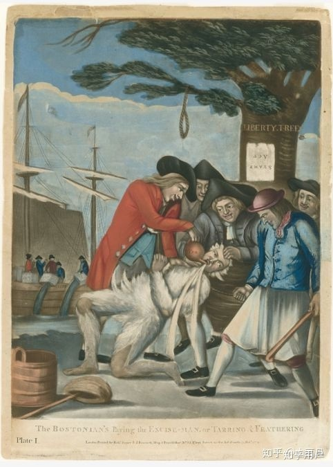
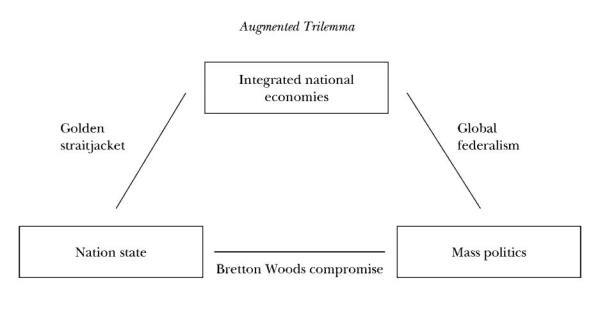
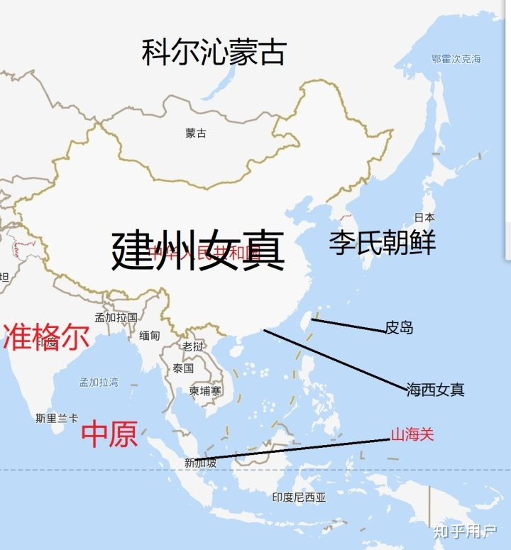

当今知乎有无数的人从事或从事过键政学研究,号称是键政的文章和回答充满了专栏、热榜和各个回答。
与之相随,“蛮夷入关学”作为键政学学科体系 下的一门具有独特魅力的分支 ，逐渐显露头角。目前世面上正在初步形成了以山高县语录为基础，以七十二贤冲塔言论为补充的理论体系，即“蛮夷入关学”（以下简称为入关学）。与之伴随的问题就是蛮夷入关学已经普及到只要学点皮毛就能研究的程度。以至于“入关，入关“的言论充斥了知乎。
我们提出的问题或许不合时宜,但面对目前知乎上各色各样的入关学研究,大多不以根本目的为导向和结构的入关学回答、文章、专栏时,我们不能不说,入关学若想继续发展。入关学需要明确研究什么、为什么研究 。笔者在借鉴知乎显学六学的理论建设的基础上，对入关学进行了一次梳理总结：[1] 。
一、什么是入关学 入关学（THE Science Of Enter The Gate），是一门研究山高县相关入关言论及其所代表的思想的新兴学科，其基础载体是山高县相关语录，以七十二贤冲塔言论为补充，以历史上的现实例子为渊源。 从学科划分角度上来说，入关学是一门交叉学科， 其覆盖领域包括政治学、军事学、地缘政治学、经济学、政治经济学、历史学等等，是一门相当前沿的综合性学科，并且还有很多发展的空间，值得研究者们去不断探索。 但随着近日入关学在人民群众中的普及，它也暴露出了许多问题：入关学的研究对象究竟是什么？入关学的使命是什么？入关学对人类社会有什么积极的意义？
目前知乎上的疑问主要是，入关学的研究对象 到底是山高县的回答？还是评论区的精彩（献祭）言论？还是地缘政治学、军事学、经济学、明清易代史？ 笔者认为，其实三者一个密不可分的整体，缺少哪个都不能独立存活。山高县的回答基础来源于地缘政治学和军事学，为了使国人更清晰的理解而创造性地发明了将之粗略地投射到明清易代史的语境中，以此使得更多人方便理解学习。在入关学领域中，评论区的言论是山高县回答与键政研究者的结合体，经过知乎上各大学者（粉丝）的研究（冲塔），评论区的言论已经成为入关学丰富的增长点，是入关学理论知识在各个学者研究中不断突破、优化、细化的基础，被大批入关学学者应用于入关学研究中;然而，评论区言论在入关学教育中的应用尚浅，尚未得到应有的重视，但评论区言论对入关学领域的重要性决定了其在入关学教育中应用的必要，应用在入关学教育中是必然的。
目前入关学的主要内容分3类：
（1）通过历史研究，以明亡清兴的历史教训论证了身为一个蛮子的正确自我认知 [2] ：
即入关的必要性 1.入关是女真团结的唯一途径，是女真求活的唯一选择，是女真崛起的唯一道路。 2. 扫帚不到，灰尘不会自己走掉。大明再烂，没有女真步步紧逼，一时半会儿也完不了。 3.蹲鹰和挖参固然能挣一些钱，然而改变不了摸鱼是绝大多数女真年轻人唯一出路的现实。 4. 摸鱼的命，不要操天朝的心。靠蹲鹰挖参和摸鱼，不仅买不来洪承畴，连范文程都买不来。 5.与其在关外吃敕书，不如到京城印敕书。 6.没了大明的敕书，女真也没饿死。 7. 靠同胞之情，同种之谊，既不可能让叶赫归顺，也不可能让朝鲜归降。 8. 在赫图阿拉再怎么读半吊子圣贤书，也改变不了摸鱼的现实。 9. 入关前不要搬着圣贤书胡思乱想，入关后自有正统儒学大师为我所用。
（2）通过对M国的研究，论证了M国治球不义不利，丧失人心、天道更易，而应有德之人居之：
具体又分为三方面论证：
1.M国崛起史、得球史寡廉鲜耻、不仁不义，实在人神共愤：
1.1
1845年，M国悍然吞并墨西哥领土德克萨斯后。仍不知足，得陇望蜀，竟恬不知耻的向墨西哥购买加利福尼亚和新墨西哥的广袤领土。[3]
1.2
英国在1807年就禁止贩奴，1833年就全面解放奴隶。而M国政权，直到1862年才解放奴隶，死不悔改、落后反动。[4]
1.3
M国是近现代极权迫害的极致，暴行不义，违反人权。
具体有以下方面：第一是政治迫害，比如独立战争时期，各个殖民地成立委员会，迫使每一个人宣誓效忠于合众国，胆敢不宣誓者，一律关进大牢，没收一切财产。第二是没收财产，比如1777年11月，国会建议各州没收变卖效忠派的财产。这个提议迅速得到支持。第三是人格侮辱，典型例子是托马斯布朗事件：乔治亚洲的著名效忠派托马斯·布朗，此人是一个富有的种植园主，1774年才来到殖民地。1775年一群独立派来到他家中，要求他向独立事业宣誓效忠的，他拒绝了，于是其他人打破了布朗头盖骨，剥下了他的部分头皮，并把他吊到他家门前的树上，又来了一出“涂沥青，粘羽毛”的戏码。而后他们又架上一堆火烤他，最终他的两个脚趾头被烧掉。第四则是互杀俘虏。[5]

爱国群众对效忠派M奸粘羽毛，涂沥青 由上诉例子可得结论：M国是近现代极权迫害的祖宗，违反人权，暴行不义。
（3）通过对M国治理全球方式的研究，论证了M国全球治理的不可持续性和必然衰亡性：
3.1M国全球治理的不可持续性：
M国对世界经济的统治，宛如蒙古对中亚的统治。原本收税就行了，结果还是蒙古那一套——抢，没事就去抢劫自己治下的百姓来维持生活。例如索罗斯之流说白了就是蒙古抢劫大队长[6] 。
而目前全世界最大的危机正是全球性的财政危机 ，连用货币政策和财政政策辗转腾挪的空间都很小的情况下，天降伟人特朗普还在全世界不停的火上浇油。俗话说国无完国，但会完蛋，饿虎不择食，蝼蚁且贪生。完蛋预期面前，这个世界要出多少幺蛾子，实难想象[7] 。
3.2M国全球治理的必然衰亡性：
M国是一个世界性的帝国，对一个世界性帝国来说，逆全球化四个字意味着什么？ 天子失德，诸侯离心，蛮夷崛起，四方扰攘 之时。苏松二府的繁华，秦淮河畔的纸醉金迷，东林书院里的风声雨声读书声，又能代表什么呢？ 分析M国，要以其全球统治体系的运行状况为出发点，光盯着M国这个南直隶，是看不出什么的。[8]
但是全球化是其致命漏洞的，Dani Rodrik在2000年就指出，尽管全球化（在当时看来）势不可挡，但内在地蕴含着危机，根源在于全球经济一体化与全球政治上层建筑之间不可调和的矛盾。 Rodrik这篇文章[9] 提出了一个“全球化三元悖论 ”，即经济一体化（或者说全球化）、民主政治和民族国家难以同时兼得，最多保证其二

简而言之，经济全球化要求各国采取削减贸易壁垒，统一税制与监管，开放资本流动等一体化措施，这会对国家主权造成威胁；如果要在保证各国主权完整的情况下强行推进全球化，当国内部分群体利益受损时，只能牺牲这部分人的利益，而这又违背了民主原则；保证民主与主权完整必然会使全球化放缓[10] 。
综上所述，M国的全球治理体系存在重大缺陷，必然走向衰亡。
许多研究者认为入关学是最近才出现的，这其实是不对的 ，因为通过文献研究，笔者发现，其实入关学的历史比一般意义上久远的多。广义上讲应该有两千余年的悠远历史。 理论依据：吾入关，秋毫不敢有所近，籍吏民，封府库，而待将军。(《史记·项羽本纪 》)
根据史记的记载，刘邦 其实才是入关学的第一位创始人、第一位研究者 。刘项之争，刘弱项强，项羽分封刘邦于偏僻、资源贫瘠的蜀地（华夏文明当时的边缘地带），而自己占据华夏文明当时的中心地带，并挟制义帝作为大义，妄图通过资源封锁刘邦，通过占据道德的制高地谴责刘邦，通过占据文明的解释权将刘邦蛮夷化， 这样的处境不能不说是很相似的阿！
在这样的困境面前，刘邦通过潜心研究入关学 ，采用张良、韩信的计策，暗度（入）陈仓（关） ，进入到肥沃、发达、人力资源丰富的关中平原，以此获得了和项羽争霸的资本，最终夺取天下 。这正是刘邦研究入关学的证据和成果！
此外，入关学还经过了历代各位大家的不断补充，在不同的历史时期里，入关学的表现形式包括并展现为：北伐、南下、东征等。
例如：
前1046年：武王伐纣，入关学萌芽 前206年：刘邦暗度陈仓、还定三秦，诞生了第一为入关学家
227年：诸葛亮上出师表，被誉为千古奇文，这是入关学的第一次高峰
1644年，清军入关，这是入关学第一次进行朝代更替规模的应用
1941年12月，日军偷袭珍珠港，南下南洋，最终失败，昭（招）和（核）名副其实，这表明了入关学仍存在的缺陷，即如果研究不当、理解偏差，将一定灭亡
2019年，山高县于知乎开讲入关学，一时云从者众，成为知乎键政一大显学，与曹学等并列知乎键政奇学
二、入关学的两大理论
海东青和高丽参确实是建州经济的支柱，007式的蹲鹰和挖参虽然苦，但在建州也是让绝大多数摸鱼诸申羡慕的好工作。然而蹲鹰和挖参，改变不了摸鱼是绝大多数女真年轻人唯一出路的现实。建州固然不可能靠摸鱼崛起，更不可能靠蹲海边抓海东青和钻长白山挖高丽参而崛起啊。[11]
所以，建州如果在现状下要想赢得尊重，只有一条路可走，就是——剃发易服。 蛮夷干什么都是错的，想解决挨骂问题，当然只能靠留头不留发，留发不留头（手动狗头）。 所以，从而明确了入关学研究的意义：即建州想解决尊重问题。首先，得入关，入关就是一切，一切为了入关，不入关，一切免谈。 你不入关，大M以抢劫治天下且有无数砖家穴者论述其合理性与合法性。在这种人类历史上空前无耻的舆论氛围面前，不入关消灭大M，绝其社稷，谈何赢得尊重？ 至于入关之后，山高认为应该做两件事（剃发易服笑笑就好）： 1：剿兵安民，彻底消灭与清算大M的金融铁骑及其走狗。 2：闯王来了不纳粮，不利用国际贸易与结算体系为自己牟利。 当昭告天下： ——今我华起义军，行天诛。非图一家一姓之荣华，实为五洲苍生之乞活![12]

从经济学角度讲，垄断资本主义规则下，自由资本主义是侵蚀垄断利润的规则破坏者（所谓发达国家粉碎机）。M国既然以垄断资本主义逻辑运行，那么它就必然要打击自由资本主义，以维持市场秩序。 而建州由于人口太多，发不起垄断资本主义阶段失业无产阶级的奶头乐，是很难向垄断资本主义转型的，除非有世界范畴内的垄断利润可吃（甚至哪怕入了关，也不过996变成986）。 所以说中国对M国而言，既是规则破坏者，又是地位挑战者。 所以M苏在经济上是可以共存的（M苏在没有核武器的时代也没有打热战），建州和M国之间则不一样。[13]
入关学家逗比南波万 @逗比南波万 认为，当下我们面临的重要困惑是：
为何我们政治文化地位跟经济军事地位不符合？ 为何全世界都不待见建州人？ 为何舆论的高地我们没法占领？ 为何英M一张表单，能让我们投入千亿真金白银，再吸收一大群洋垃圾？ 为何？一句话，因为你是蛮夷。 华夏文明，如烈日当空，五千年来都是棋手，一直以天朝上国自居，何来蛮夷之说？因为现代化是英M开创，全世界的现代化都不可避免混入西化。你说现代化是你自己的，那是胡扯。你警察，西装咋回事？我们是天朝上国，划分出：南蛮、北狄、东夷、西戎。欧M是现代化正统，我们就是东夷。不想承认，也没办法。 综上，逗比南波万通过研究入关学理论，认为解决方案是： 入关！入关是让我们早饭M国。蛮夷灭了正统，自有衍圣公带头来跪。成了，我们就是真命天子，是罗马正统，是天道正义之剑。[14]
三、入关学的具体应用
键政一向被视作咸吃萝卜淡操心，甚至有观点认为键政是“地沟油的命，ZNH的心”，故很多人认为入关学也是如此。 笔者认为这有失偏颇。笔者经过总结发现，其实入关学理论能帮助我们正确认知世界，占领舆论高地 和积极应对生活 。从而帮助我们更积极、更向上、更正能量。
入关学理论是山高县键政理论体系的基础，为学生认识和理解山高县键政理论体系提供渠道，训练并培养学生的键政思维，为培养键政方面人才提供了方法。入关学理论也是知乎键政体系扩展和发展的重要动力，通过重视入关学理论的研究，我们就可以借助入关学理论理解和认知当今世界体系的由来和发展，从思维和实践中培养更加优秀、专业的键政人才。只有认知世界正确了，我们才能形成良好的思维，将理论知识灵活运用于既定事实之中，占领舆论的高地、提升爱国主义教育 。因此，入关学的研究可以更好培养出爱国主义正能量知乎键政体系的人才。
作为当今重压之下浮躁内卷佛系的青年，入关学倡导的思想更能让人乐观向上、充满希望 。 学习入关学后将明白面包会有的，楼上楼下，电灯电话也会有的。我们将在有生之年，用铁与火，在冲绳海沟，将日本人的舰队埋葬；在安达曼海与孟加拉湾，将印度人的舰队，变成一堆废铁；在北大西洋和南赤道，在密克罗尼西亚，在所罗门群岛，将美国人的所有航母舰队，变成一具又一具的海底铁棺材。
俗话说，白白胖胖，充满希望，人最怕的就是失去希望，变成一具行尸走肉，只要还有希望，就还拥有一切。
四、结论与展望 本文首次以理论的高度总结了入关学的定义、渊源及其应用，是对当今入关学发展的一次大一统性工作。不过限于作者水平，观点上难免会有疏漏，甚至存在争议，但态度是端正的，毕竟摸鱼是女真年轻人唯一的出路，可是谁不想念四书五经呢？ @山高县